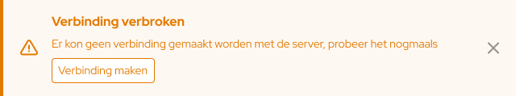
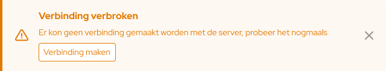

Brok Bouwmaterialen
01/2025
UX
UI
Brok Bouwmaterialen arrow_outward is a web-based hardware store. They deliver for both private and b2b related. They commissioned a different designer to flesh out their style, however they weren’t happy with the functionality on a lot of the product pages, which had to be edited. Besides that they were also looking for some additional pages and some other content.
Product pages
Brok were looking for a couple of different product pages, for different types of products they sell. The differences on these pages were mainly in the product details, where the configurator could be used for both say amount of tiles as well as square meters.


We'd start out with what we call the 'standard' layout, a volume discount table, followed by a calculator that calculates the amount of tiles needed per square meter. Secondly I designed one that was specifically used for product variants such as different shades of decorative tiles.
Next I created one with a simple selector that is for example used for wooden beams of a specific length. I also designed a variant of the selector where you'd have two different selectors, these were mainly used for insulation, where you could select the size and thickness of said insulation.

And finally we had the simple variant for miscellaneous products that didn't need any special calculators.
Mega menu
One of the things missing from the updated design was the mega menu. Their nav bar included a couple of menus with less than ideal amounts of sub navigation for a mega menu, so we had to tweak it a bit to make it work.


System notifications
One thing the original designer hadn't designed were system notifications. These system notifications fit within the rest of the design while still standing out enough to grab attention when they appear.
 
